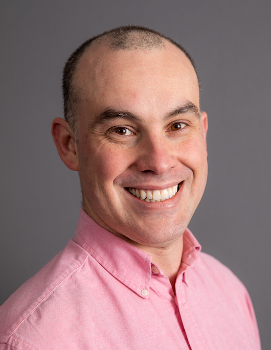

Igor Steinmacher, PhD
Associate Professor · Northern Arizona University
Associate Director for Graduate Programs and Academic Affairs · SICCS
About
I am an Associate Professor at Northern Arizona University, where I wear several hats: I lead a research group, teach across the computing curriculum, run graduate and academic affairs for my school, supervise and teach students in different areas.
Research. I co-lead the RESHAPE Lab with Marco Gerosa, studying the sustainability of open source software and how AI reshapes software development. Our work is funded by the NSF, TRIF/NAU, and the Alfred P. Sloan Foundation and has earned multiple Distinguished Paper and Best Paper awards.
Teaching & curriculum. I have taught in higher education for over twenty years, from introductory programming to graduate research methods, in undergraduate and graduate level. Recently, I chaired the committee that designed NAU's new interdisciplinary Bachelor of Science in Artificial Intelligence, launching Fall 2026.
Academic leadership. As Associate Director for Graduate Programs and Academic Affairs at SICCS, I help steer graduate education, academic coordination with undergraduate majors, and scheduling across eight degree programs. I also serve the research community as a conference chair, reviewer, editorial board member, and mentor.
// every square is a contribution — and somewhere in the noise, three letters
Research
Open Source Sustainability
Barriers faced by newcomers, mentoring, maintainer issues, governance, and forecasting developer inactivity.
AI in software development
How to use AI agents to support software development, including agents to help newcomers, understanding developers' use of generative AI, and use of AI to support empirical SE research.
Learning through open source
Gamified environments that scaffold student contributions, active learning, and bridges between universities and OSS communities.
Funded Projects
- CommUnityBuddy — a conversational agent supporting open source contributors — Alfred P. Sloan Foundation, 2026–current (lead PI, USD 100K).
- NSF POSE: expanding the data.table ecosystem for efficient big data manipulation in R — 2023–2026, lead PI, USD 731K, with Marco Gerosa and Toby Hocking.
- NSF HSI: a learning environment for an open-source contribution model (OSS-Doorway) — 2023–current, lead PI, USD 498K, with Marco Gerosa.
- NSF IUSE: scaffolding computational thinking in introductory CS through a conversational agent — 2023–current, lead PI, USD 405K, with Marco Gerosa.
- NSF CHS: Gender-Inclusive Open Source through Gender-Inclusive Tools — 2019–2023, lead PI, USD 528K.
- DisTrac — forecasting core-developer inactivity in OSS projects, with the University of Bari.
Teaching
I have taught in higher education for over fifteen years, at undergraduate and graduate levels (software engineering, programming foundations, research methods, algorithms, human-computer interaction, capstone, and open source development). I chaired the proposal committee for NAU's new Bachelor of Science in Artificial Intelligence, an interdisciplinary degree starting Fall 2026. My CS-education research (gamified OSS learning, active learning) feeds directly back into the classroom.
Students
I have supervised ten PhD students to completion as principal supervisor or co-supervisor — including Bianca Trinkenreich, whose dissertation received the 2024 ACM SIGSOFT Outstanding Dissertation Award.
Current PhD students
- Pedro A. Oliveira (NAU, 2024–current) — open source governance as a foundation for project sustainability
- Jacob McAuley Penney (NAU, 2023–current) — LLMs to support computational thinking and developer learning
- Morgan Nicholson (NAU, 2025–current) — conversational agents in developer support
PhD alumni
- Ana Claudia Maciel (UEM, 2026) — communication channels in open source · on the job market
- Italo Santos (NAU, 2024) — now Assistant Professor, University of Hawaii
- Simone de França Tonhão (UEM, 2023) — now Assistant Professor, UFMS
- Fabio Santos (NAU, 2023) — now Research Associate, Colorado State University
- Bianca Trinkenreich (NAU, 2022) — now Assistant Professor, Colorado State University
- Patricia Matsubara (UFAM, 2022) — now Associate Professor, UFMS
- Mairieli Wessel (USP, 2021) — now Assistant Professor, Radboud University
- Williamson Silva (UFAM, 2020) — now Assistant Professor, UFCA
- Jefferson Silva (USP, 2019) — now Lecturer at Inteli / Associate Director, PUC-SP
Prospective students
In my group (Computer Science / Informatics and Computing, NAU–SICCS), PhD students focus on open source sustainability, human aspects of software engineering, or AI in software development. When you email me, explicitly mention the research topics you're interested in and show what you have already done related to them.
Service & Leadership
Conference organization
- General Chair — Mining Software Repositories (MSR 2026); ICSME 2024; CHASE 2023
- General Co-Chair — International Conference on Program Comprehension (ICPC 2024)
- Area Chair, Human Aspects — ICSE 2025
- Program Co-Chair — SBES 2024; OSS 2022; ICSSP 2022; ICGSE 2020
- Earlier roles — Publicity Chair ICGSE 2017; Proceedings Chair ICGSE 2016, SBCARS 2016
Editorial & reviewing
- Editorial Boards — Empirical Software Engineering (since 2022); Journal of Software: Evolution and Process (since 2021)
- Program committees — ICSE, ICSE-NIER, MSR, CSCW, EASE, ICSME, OSS, ICGSE
- Reviewer — TSE, TOSEM, EMSE, IST, JSS, ACM Computing Surveys; Distinguished Reviewer Award, ICSE 2023
Institutional & community
- Associate Director for Graduate Programs and Academic Affairs — SICCS, NAU
- Chaired the proposal committee for NAU's BS in Artificial Intelligence (starts Fall 2026)
- Education Committee, Brazilian Computer Society (2015–2017)
- Recent keynotes — FOSSY 2025 (Portland); GiraEuropa 2026 (Italy & Switzerland)
Contact
Email: igor.steinmacher@nau.edu
School of Informatics, Computing and Cyber Systems
Northern Arizona University — Flagstaff, AZ, USA